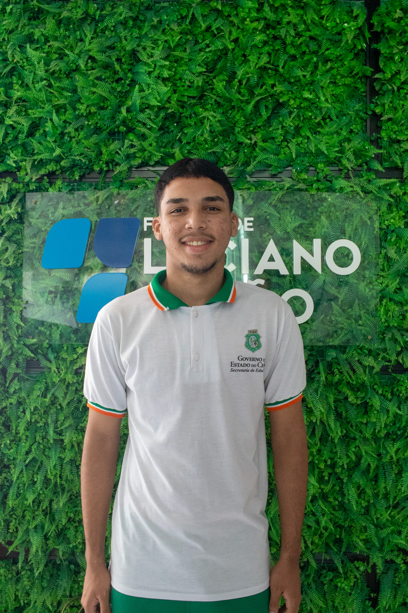

Rodrigo é responsável por ficar no suporte e ajudando em vários setores
Rodrigo integra a equipe de Suporte de TI Nível 1, oferecendo suporte técnico e garantindo que os sistemas e dispositivos da empresa funcionem de forma estável. É responsável por solucionar problemas técnicos, configurar estações de trabalho e auxiliar em manutenções preventivas. Proativo e comprometido, busca aprimorar suas habilidades técnicas e contribuir para o desenvolvimento do setor de TI.